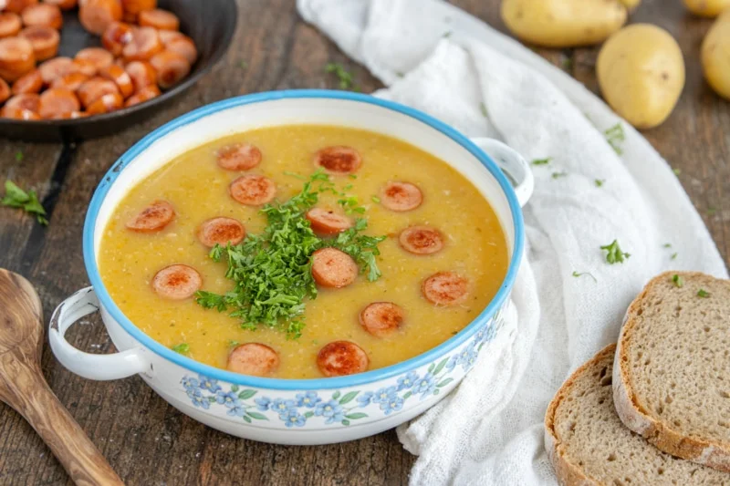

Kartoffelsuppe

Das ist ein Rezept für eine cremige, super leckere Kartoffelsuppe. Hab noch keinen getroffen der sie nicht mochte! :)
Zutaten
- 700g Kartoffeln
- Suppengrün
- Gemüsebrühe
- 200ml Schlagsahne
- Pfeffer
- Salz
- Muskat
- 8 Wienerwürstchen
Anleitung
- Schäle die Kartoffeln und die Möhren aus dem Suppengrün.
- Schneide die Kartoffeln und das Suppengrün klein. (Lass etwas Petersilie für die Deko übrig!)
- Koche 3l Gemüsebrühe. (Siehe Anleitung Hersteller!)
- Brate die Speckwürfel schön knusprig an.
- Füge nun die Kartoffeln und das Supengrün dazu und lass es für 5 Minuten mit anbraten. (Rühren nicht vergessen!)
- Lösche das ganze mit der Gemüsebrühe ab und lass es für 25-30 Minuten kochen.
- Nun kannst du das ganze in einen Mixer tun und alles schön cremig mixen. Alternativ geht auch ein Stampfer. Dann wirds etwas bissiger.
- Tue alles wieder in einen Topf und gieße die Schölagsahne dazu.
- Hau die Wiener rein.
- Lass es weiter für ein paar Minuten kochen. Dabei kannst du es mit Salz, Pfeffer und Muskat abschmecken.
- Fertig. Juten Hunger! :)